Overview ───────
Jewels By The Sea is a boutique at La Jolla, California that specializes in selling eclectic and unique jewelry.
Problem
Another paragraph of text here
✦ The Redesign ✦
Our Process
1. Empathize
Interviews
"Was there ever a time you had difficulty finding a study spot?"
"One time I had a short gap in between classes so I didn't have much time to look for a spot. I ended up just sitting outside on some benches because I knew I probably wouldn't find anything."

Daniel
Primary Stakeholder
"I usually study at the Women's Center, but it closes at 3pm. After that it's really hard to find a place because a lot of people are done with their classes and are all looking for somewhere to study."
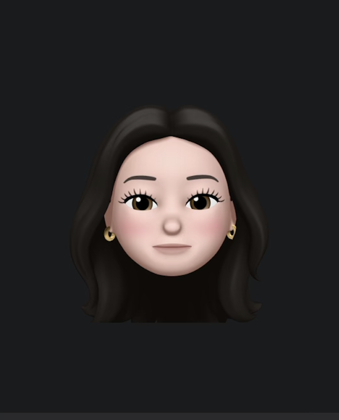
Aubry
Primary Stakeholder
"I like studying at the cafes on campus but a lot of the times I just pick one randomly and hope I get lucky [finding a seat]. People usually stay at a table for a long time and I don't have a way of telling if there's an open spot."
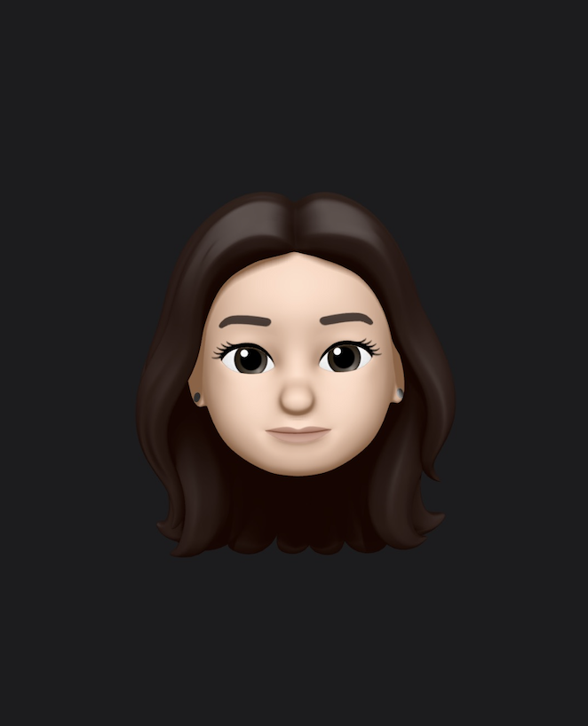
Angie
Primary Stakeholder
"During finals week it's almost impossible to find somewhere to study on campus. I avoid going to the library because it's super packed during that time but that's where I usually try to study so it sucks."

Carlos
Primary Stakeholder
Previous
Next
"One time I had a short gap in between classes so I didn't have much time to look for a spot. I ended up just sitting outside on some benches because I knew I probably wouldn't find anything."
Daniel
Primary Stakeholder
"I usually study at the Women's Center, but it closes at 3pm. After that it's really hard to find a place because a lot of people are done with their classes and are all looking for somewhere to study."
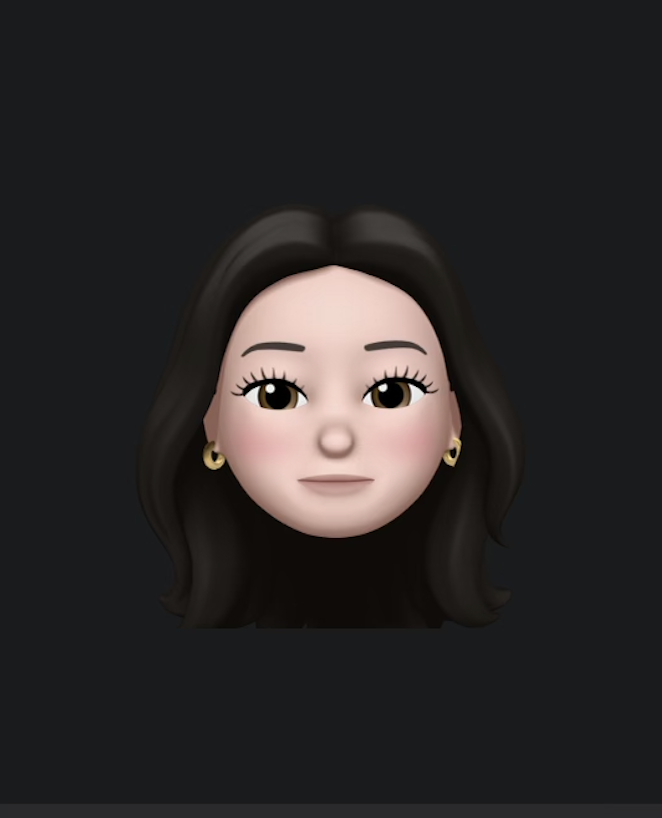Aubry
Primary Stakeholder
"I like studying at the cafes on campus but a lot of the times I just pick one randomly and hope I get lucky [finding a seat]. People usually stay at a table for a long time and I don't have a way of telling if there's an open spot."
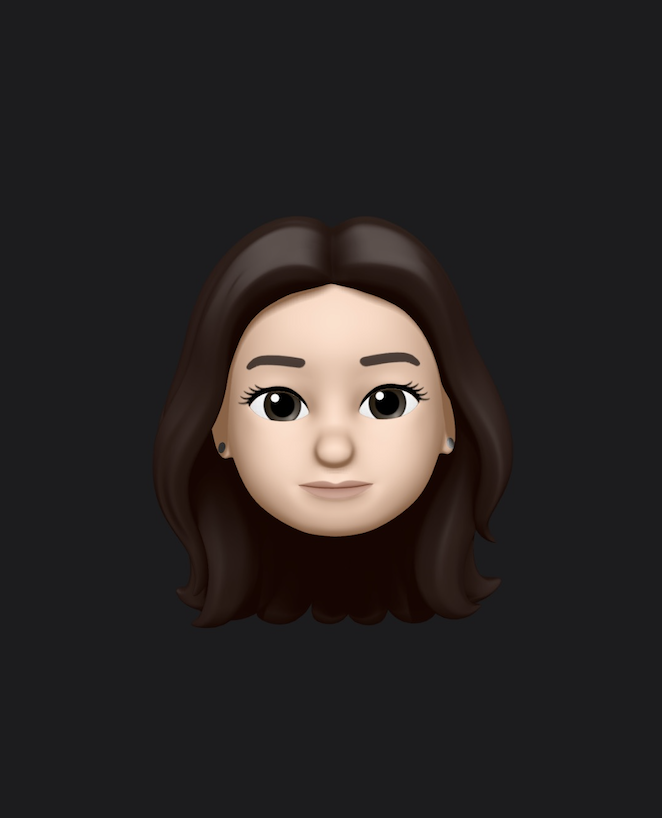Angie
Primary Stakeholder
"During finals week it's almost impossible to find somewhere to study on campus. I avoid going to the library because it's super packed during that time but that's where I usually try to study so it sucks."
Carlos
Primary Stakeholder
We conducted 4 primary stakeholder (college students) and 2 secondary stakeholder (older sibilings of primary stakeholders) interviews. All of our interviewees said finding suitable study spots was a problem they resonated with.
*Interviews were recorded and transcribed using Otter Ai
User Persona

We used our interviews to create user personas for both our primary and stakeholders. We focused on using our primary stakeholder persona, Jonathan, to help us design INSI in a way that would best fulfill our user needs.
FigJam Board
Check out my team's FigJam Board for a more in-depth version of our Empathize stage (user scenarios, story boards, interview questions, interview data, user persona iterations).
Competitive Analysis

2. Define
Problem Statement
How might we help UCSD students quickly find locations that meet their personal study space preferences in order to maximize their time to attend to their other responsibilities as students?
Stakeholder Pain Points
1) Unsure if study spaces have:
a. Spots available b. Amenities c.Ambiance
2) Difficulty finding study spots at specific times of the day
Mission Statement
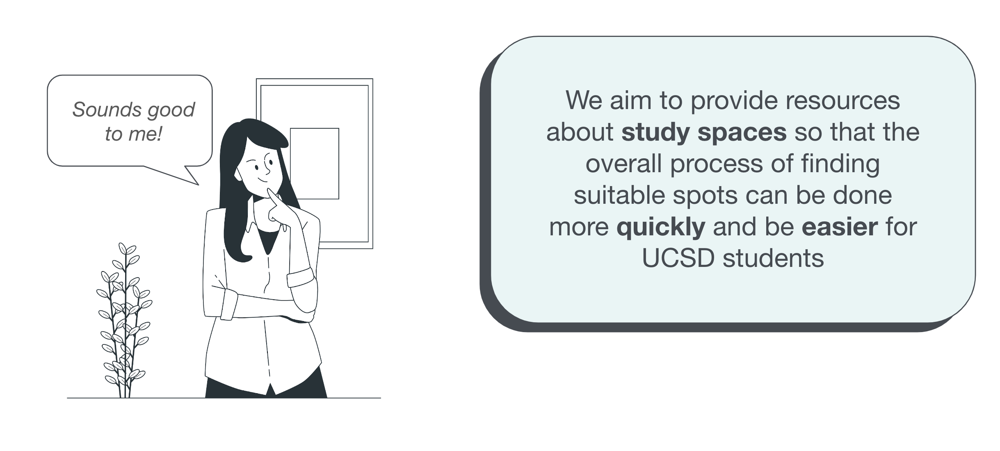3. Ideate
INSI's Core Features
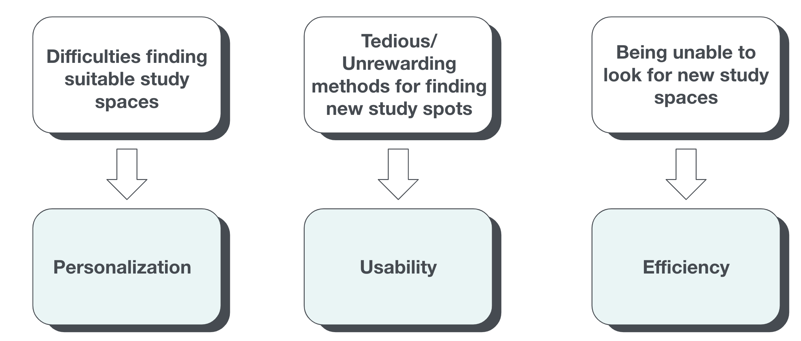
Mood Board

Initial Style Guide
We envisioned a welcoming, productive, and uplifting atmosphere for INSI. We also enjoyed the minimalistic study space images on our moodboard and hoped to include this clean and simple aesthetic in our app.
We felt the soft, robin egg color with dark grey for accents paired with white, black, and Helvetica font best matched what we envsioned for INSI. We ensured accessibility for all users by verifying ADA compliances.
4. Lo-fi Prototype
Ideation
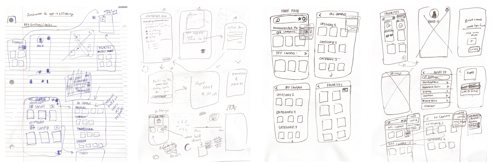Prototype Screens
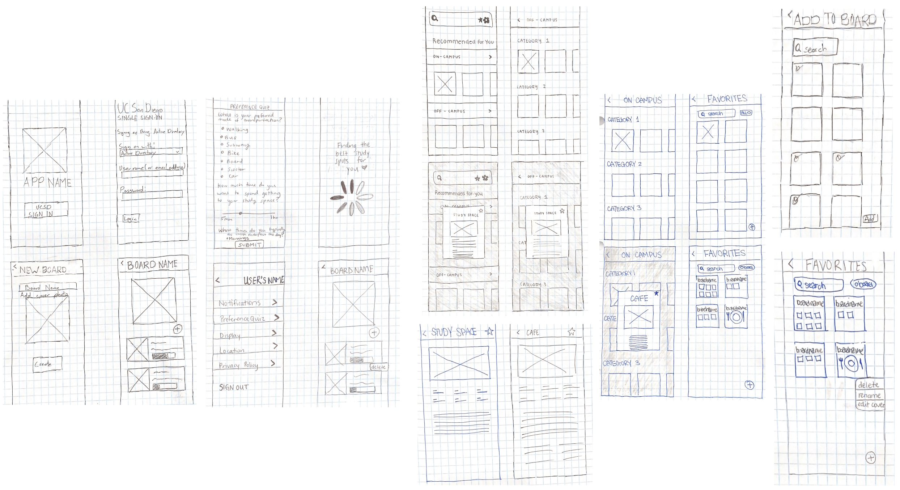Prototype in Action
Click to check out our complete Lo-fi Prototype on Marvel

4.1 Lo-fi Prototype User Testing
Goals
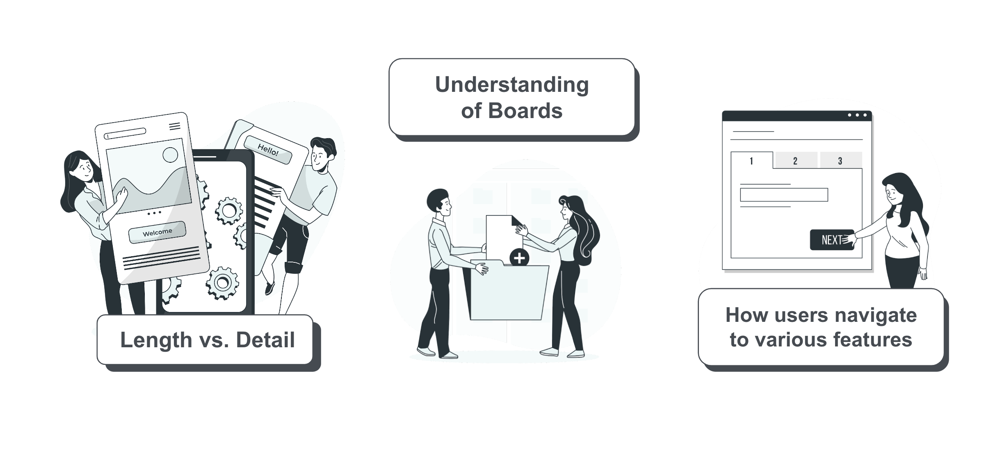We wanted to find out:
The tradeoff between length and detail in our onboarding process
If our users understood the concept of boards
How users navigate to features such as favorites, collections, and study spaces
User Testing - Round 1!


We had a total of 10 participants for our user testing. We conducted our testing through zoom and utilized its screen recording capabilities to collect data on how users interacted with our prototype. Afterwards we asked participants follow-up questions regarding different aspects of our app.
Insights

Iterations

5. Hi-fi Prototype
Final Style Guide - Figma
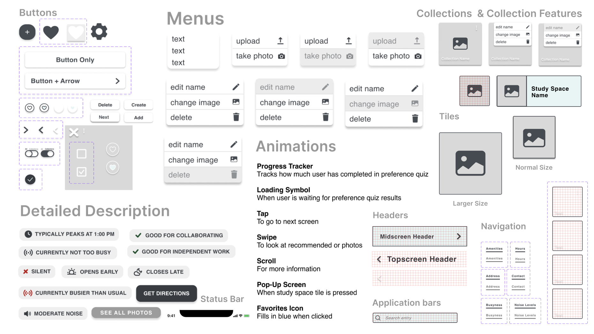Final Style Guide

We improved our initial style guide by adding a gray color for when a button is being hovered and went more into detail on how the Helvetica font and colors should be used in different scenarios.
Style Guide Visual Reference

Prototype in Action
Click to check out our complete Hi-fi Prototype on Figma

5.1 Hi-fi Prototype User Testing
Goals

We wanted to hear what people thought of our renaming of 'board' to 'collection,' the new buttons for editing preference quizzes and the favorites section, and our addition of the search keywords in the search bar.
User Testing - Round 2!
Same process as last time! We screen recorded prototype interactions on zoom and recorded partipants responses to follow up questions/tasks after. We had 10 new participants for this second round of testing.
Findings
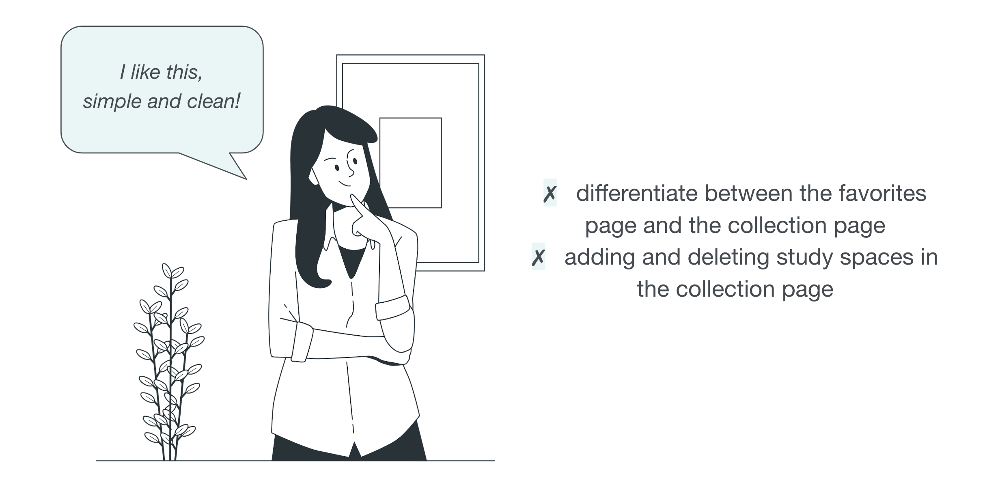We discovered that users enoyed the app's appearance since it was fun and bright. They did say that it was difficult to tell the difference between the favorites page and collection page. Because of the ambigious signifiers, it was difficult for them to add and delete study spaces on the collection page.
Final Iterations


Since users often avoided clicking the people often avoided clicking the "Preference Quiz" button during our user testing, we renamed this button to "Preferences" since the word "quiz" often carries negative connotations.


The creating and deleting features in the collection page weren’t intuitive for some users. We changed the location of the creating button (i.e. '+') to the top right corner of the screen and have the delete button as three dots. We hoped to utilize app conventions for creating and deleting symbols to improve the intuitiveness of our app.
Reflection
INSI-related
While writing this case study, I realized 2 things: we could have shown the connection between our problem statement and course prompt more clearly, and our process for adding study spaces into a Collection is not as intuitive as we thought.
1. Problem Statement
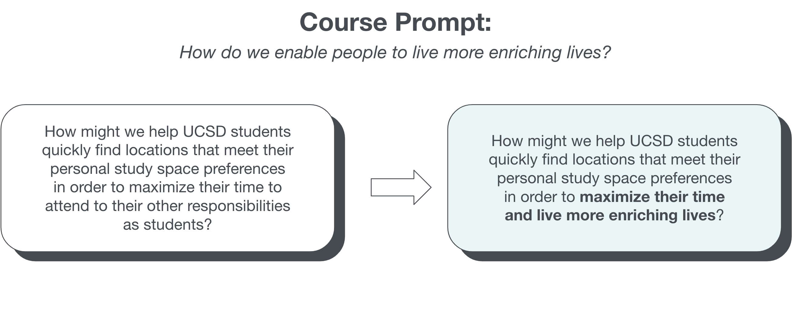2. Potential user errors - Adding study spaces into a Collection
Instead of allowing users to search and add any study space into a Collection, we limited their options and only allowed them to search for and add study spaces they favorited in the past.
This could be frustrating if a user knew of a spot they wanted to add into a Collection but didn't favorite it. There also is no instructions letting a user know they have to favorite a study space in order to add it to a Collection. This would result in user confusion since it would appear as if a study space they searched for just isn't appearing.
*Image shows the current screen appearance if a user were adding to a Collection called "Cozy Spots"

Our search bar in the Collections page should access all study spaces instead of only study spaces a user favorited to streamline the process and prevent errors/confusion.
Overall Learnings
Time away from a project is valuable!
Revisiting this project has made me think to myself, "Why didn't I think of that before??" a couple of times. This time away has given me a new perspective and I was able to find a section of our app that was not as user friendly as my team and I imagined.
I'm am a UI/UX Designer!
This was one of my first UI/UX projects I had completed. Before this course, I was unsure of my skill level and struggled with imposter syndrome. When my team and I submitted this project, I was proud of what I had accomplished with my teammates and finally felt like a real UI/UX Designer! I realized I had been too harsh on myself before and am fully capable of being a UI/UX Designer.
Next Steps

With more time, our next steps would have been to conduct more user testing to understand users’ thoughts on our last iterations. We would have also began to identify the technicalities of accessing real time information for study spaces.
*All graphic illustrations from Storyset.*
Other Projects

Modern Adas arrow_outward
#Website Design & Development, Project Management
Have a design idea for my billboard or just want to chat?